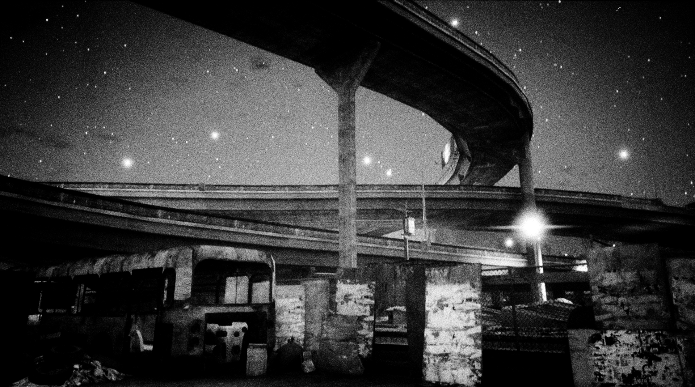

2 Architecture Photography
The Continuous City, by Gareth Damian Martin
Gareth Damian Martin, Outskirts, from The Continuous City,
 Gareth Damian Martin, Pathways, from The Continuous City,
artwork text
More about The Continuous City Interview with Gareth Damian Martin
Readings
Mark D Teo, The Urban Architecture of Los Angeles and Grand Theft Auto, 2015. https://www.academia.edu/18173221/The_Urban_Architecture_of_Los_Angeles_and_Grand_Theft_Auto